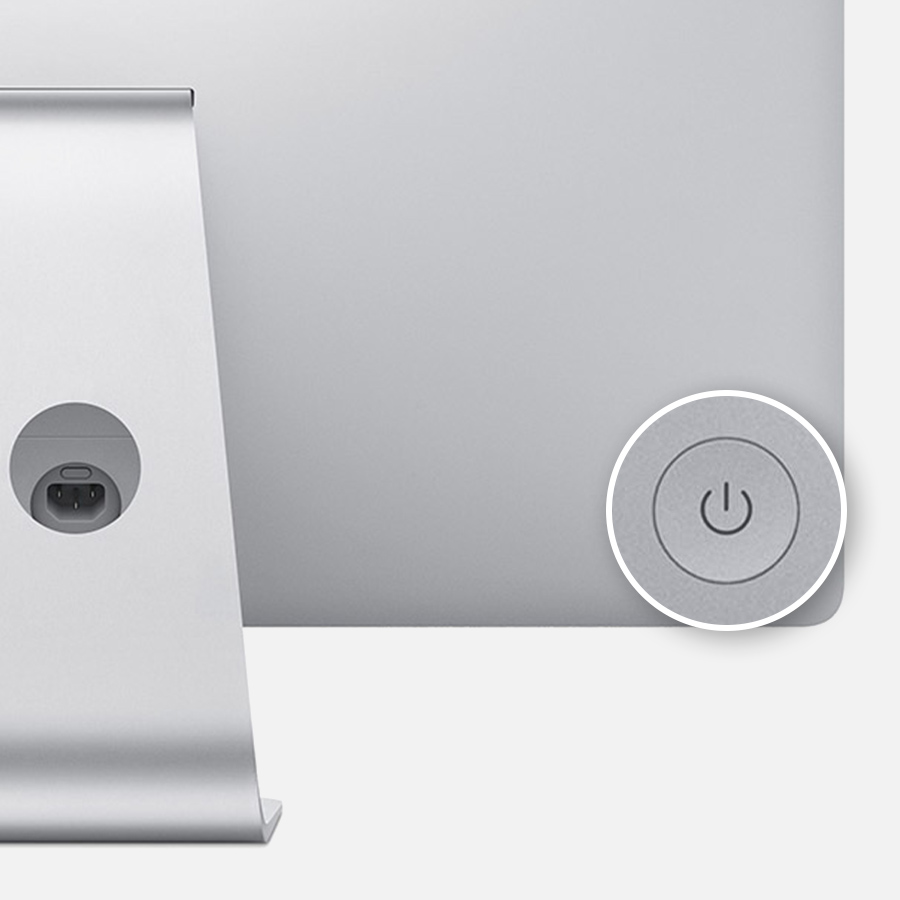

電源とアプリケーション - コンピューターの基本操作
category: コンピューターの基本操作
PCの電源を入れる切る及び アプリケーションの開閉の方法を開設します。当たり前な内容ですが確認も含めてもう一度見直しましょう
※文字ばかりでもうしわけありません。実際のPCを触りながら確認していきます。
※パーソナルコンピュータ全般をOSを問わず「PC」とここでは書いています。
※OSXはApple社のOSです。windows10はマイクロソフト社のOSです。
電源の位置
一般的な電源スイッチの記号
PCの電源がきれているかどうかは モニターとわかれたデスクトップの場合PC本体の電源ダイオード（ランプ）を目視で確認してください。iMacタイプのPCは画面の左下の裏面にあります。

スリープ状態に気をつけて
作業から離れて30分ほど経過するとPCはスリープ状態（省電力モード）になります。キーボードやマウスのいずれかのキーを押下することでモニタ-が点灯しスリープ状態から回復します。
電源のONからログインまで
アカウントを選んでパスワードを入力し自分のパーソナルモード（デスクトップ）での作業になります。 PCはマルチユーザーでの操作を前提につくられていますのでパーソナルといえどパスワードでユーザーの切り替えができ家族で1台のパソコンがつかえたりします。
- 電源を入れる
- アプリケーション使う
- アプリケーションを切る
- 電源を切る
学校ではパスワードをいれません
学校ではオープンのユーザーアカウント（生徒用）で操作します。 パスワードも必要ありません。 だれでも入れるPCですので個人情報など知られたくない情報や大切な情報の管理は自己責任でおねがいします。 万が一あなたの大切なデータが破損 盗作盗難にあっても私共は責任をおいません。 大切なデータはデスクトップやドキュメントフォルダに保存したままにせず毎回確実に破棄して帰宅してください。 googleChremeなどのパーソナルアカウントやSNSのパスワードなどセッションの保持にも気を付けてください。
ネットワークとつながっているか？
画面上にあるメニューバーの右側にあるWi-fiマークを確認し びっくりマーク「！」や扇マークになっていなければ接続されています。ただしネットワークの種類によってはパスワードを入力しなければなりません。学校の場合は設定済みです。
アプリケーションとは
オペレーションシステムの元で動くソフトウエアです。
アプリと略して呼ばれます
| パーツ | 総称 | 役割 |
|---|---|---|
| 操作する人 | - | 情報を入力しその計算結果を確認する。 |
| PC/コンピューター | ハードウェア | 物理的な操作する装置や計算する装置結果を表示する装置 |
| OS/オペレーションシステム | ソフトウェア | 入力出力計算記録を制御する基本プログラム |
| アプリケーション | ソフトウェア | オペレーションソフトから目的に合ったデータの入力と処理をして結果を人に伝える。 |
ハードウエアであるPCの装置制御や入力出力の基礎制御をするソフトウエア（運用システム）がオペレーションシステムです。 オペレーションシステムを使ってオペレーションシステムの機能では表現できない多岐多種にわたる役割を提供するのがアプリケーションです。
人はPC、OS、アプリケーションどれがかけてもコンピュータを扱えません。
実際のOSは人が操作できるようにいくつかのアプリケーションプログラムを携えて販売されています。
自己判断でのアプリケーションの追加の禁止
必要なアプリケーションは入っているはずです。
しかし入ってない場合や不具合がある場合は講師もしくはアシスタントにお声がけください。
みなさんの任意の判断でのアプリケーションのダウンロードとインストールは禁止です。不具合やPCの劣化を防ぐためご了承ください。
アプリケーションの立ち上げ
いくつかの方法でアプリケーションをアクティブ（使える状態）にできます。
- マウスでアイコンをダブルクリック
- ファインダーからアプリケーション アプリケーションの選択から起動
- 任意のファイルアイコンをダブルクリック（OSで設定されたアプリケーションが開く）
- 任意のファイルアイコンを右クリックしてコンテキストメニューをひらき アプリケーションから開く。
- ファイルをアプリケーションアイコンにドラッグしてアプリケーションを開く
以上の5つの方法があります。状況に応じてつかいわけてください。
任意のアプリケーションを立ち上げてみる
テキストを編集するアプリケーション
テキストエディタをアクティブにする。 テキストエディターはプレーンテキストと呼ばれる文字情報だけを記述保存編集するアプリケーションです。
。webサイトを見るアプリケーション
webブラウザをアクティブにする。webブラウザ（以下ブラウザ）はインターネットを使ってサーバーにあるデータを閲覧するアプリケーションです
アプリケーションの終了
OSXはウインドウの左上の赤いボタンはアプリケーションの一時隠すだけです。アプリケーションを終了するには下記方法で終了してください。
- メニューバーから「ファイル」メニュー ->「アプリケーションの終了」 一番下のメニュー項目に設定されていることが多いです。
- command + Q
アプリケーションの強制終了
アプリケーションがフリーズしいくら待っても次の処理に移行しないとき。command + Alt+escで該当のアプリケーションを終了することができます。
コンピューターの終了 電源を切る
OSXの場合 メニューバーのアップルマークから「システムの終了」を選択してください。
スリープ状態は電源がきれていないので不在時の故障の原因になります。帰宅時には必ず電源を切って帰宅してください。
Mac の電源を切る (システム終了する)
Mac の電源を切る場合は、Apple () メニューから「システム終了」を選択する方法が一番確実です。
Mac の電源が入った後に起動プロセスが始まるのと同じように、電源が切れる前にシステム終了のプロセスが進められます。開いている App がすべて自動的に閉じ、macOS ユーザアカウントからログアウトされます。
Mac がシステム終了しない場合は、反応しない App を強制終了してみてください。それでもシステム終了しない場合は、電源が切れるまで、電源ボタンを押し続けてください。
Mac の電源を入れる／切る方法